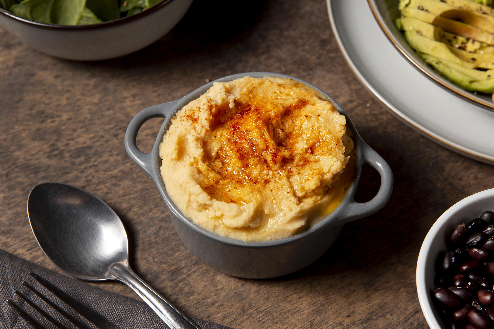

Cottage Pie
Cottage Pie
Home

Want some Cottage Pie?
Ingredients
- Ground beef: The base of the filling.
- Vegetables: Onions, carrots, celery are commonly used.
- Broth/Stock: Beef broth or stock adds flavor and moisture
- Tomato paste/Puree: Adds a rich, savory flavor.
- Worcestershire sauce: A staple ingredient for a deeper flavor.
- Herbs: Thyme, bay leaves, and other seasonings add depth.
- Optional additions: Red wine, garlic, and other spices can be added for extra flavor.
- Potatoes: Russet, Yukon gold, or other varieties are used for mashed potatoes.
- Butter: Adds richness and flavor to the mashed potatoes.
- Milk/Cream: Used for a smoother, creamier texture in the mashed potatoes.
- Cheese: Optional, cheddar or Parmesan can be added to the topping for extra flavor.
Steps to make Cottage Pie
- Cook the meat, then stir in the flour and seasonings.
- Add broth and tomato paste to the beef mixture.
- Season and simmer until thickened.
- Boil the potatoes until tender and drain. Mash, whip with milk and butter, and season.
- Assemble the cottage pie and bake until the cheese is browned and bubbly.